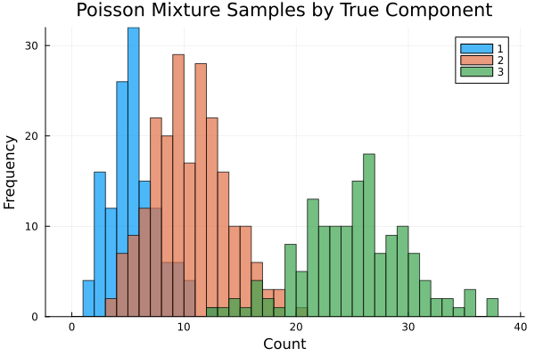
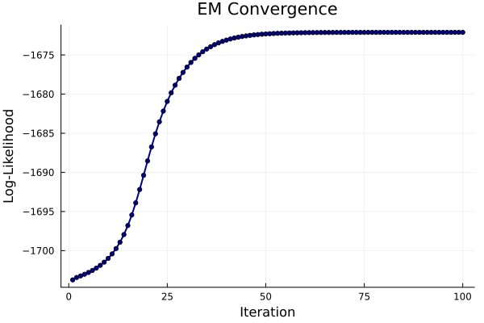
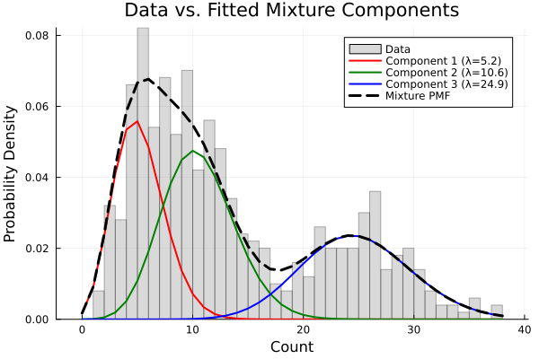

Simulating and Fitting a Poisson Mixture Model
This tutorial demonstrates how to build and fit a Poisson Mixture Model (PMM) with StateSpaceDynamics.jl using the Expectation-Maximization (EM) algorithm. We'll cover simulation, fitting, diagnostics, interpretation, and practical considerations.
What is a Poisson Mixture Model?
A PMM assumes each observation $x_i \in \{0,1,2,\ldots\}$ is drawn from one of $k$ Poisson distributions with rates $\lambda_1,\ldots,\lambda_k$. The component assignment is a latent categorical variable $z_i \in \{1,\ldots,k\}$ with mixing weights $\pi_1,\ldots,\pi_k$ where $\sum_j \pi_j = 1$.
Generative process:
- Draw $z_i \sim \text{Categorical}(\boldsymbol{\pi})$
- Given $z_i = j$, draw $x_i \sim \text{Poisson}(\lambda_j)$
PMMs are useful for count data from heterogeneous sub-populations (e.g., spike counts from different neuron types, customer transaction counts from different segments, or event frequencies across different regimes).
EM Algorithm Overview
EM maximizes the marginal log-likelihood $\log p(\mathbf{x} | \boldsymbol{\pi}, \boldsymbol{\lambda})$ by iterating:
- E-step: Compute responsibilities $\gamma_{ij} = P(z_i = j | x_i, \boldsymbol{\theta})$
- M-step: Update parameters to maximize expected complete-data log-likelihood
For Poisson mixtures, the M-step has closed-form updates: $\pi_j \leftarrow \frac{1}{n} \sum_i \gamma_{ij}, \quad \lambda_j \leftarrow \frac{\sum_i \gamma_{ij} x_i}{\sum_i \gamma_{ij}}$
Load Required Packages
using StateSpaceDynamics
using LinearAlgebra
using Random
using Plots
using StableRNGs
using StatsPlots
using DistributionsFix RNG for reproducible simulation and k-means seeding
rng = StableRNG(1234);Create True Poisson Mixture Model
We'll simulate from a mixture of $k=3$ Poisson components with distinct rates and mixing weights. These parameters create well-separated components that should be recoverable by EM.
k = 3
true_λs = [5.0, 10.0, 25.0] # Poisson rates per component
true_πs = [0.25, 0.45, 0.30] # Mixing weights (sum to 1)
true_pmm = PoissonMixtureModel(k, true_λs, true_πs);
print("True model: k=$k components\n")
for i in 1:k
print("Component $i: λ=$(true_λs[i]), π=$(true_πs[i])\n")
endTrue model: k=3 components
Component 1: λ=5.0, π=0.25
Component 2: λ=10.0, π=0.45
Component 3: λ=25.0, π=0.3Generate Synthetic Data
Draw $n$ independent samples. The labels indicate true component membership for each observation (unknown in practice and must be inferred).
n = 500
labels = rand(rng, Categorical(true_πs), n)
data = [rand(rng, Poisson(true_λs[labels[i]])) for i in 1:n];
print("Generated $n samples with count range [$(minimum(data)), $(maximum(data))]\n");Generated 500 samples with count range [1, 38]Visualize samples by true component membership Components with larger $\lambda$ shift mass toward higher counts
p1 = histogram(data;
group=labels,
bins=0:1:maximum(data),
bar_position=:dodge,
xlabel="Count", ylabel="Frequency",
title="Poisson Mixture Samples by True Component",
alpha=0.7, legend=:topright
)
Fit Poisson Mixture Model with EM
Construct model with $k$ components and fit using EM algorithm. Key options:
maxiter: Maximum EM iterationstol: Convergence tolerance (relative log-likelihood improvement)initialize_kmeans=true: Use k-means for stable initialization
fit_pmm = PoissonMixtureModel(k)
_, lls = fit!(fit_pmm, data; maxiter=100, tol=1e-6, initialize_kmeans=true);
print("EM converged in $(length(lls)) iterations\n")
print("Log-likelihood improved by $(round(lls[end] - lls[1], digits=1))\n");Iteration 1: Log-likelihood = -1703.7381918537374
Iteration 2: Log-likelihood = -1703.4303937275135
Iteration 3: Log-likelihood = -1703.2303811319314
Iteration 4: Log-likelihood = -1703.0234394955314
Iteration 5: Log-likelihood = -1702.7924193628799
Iteration 6: Log-likelihood = -1702.5298984346205
Iteration 7: Log-likelihood = -1702.2284509527722
Iteration 8: Log-likelihood = -1701.8791049401373
Iteration 9: Log-likelihood = -1701.47072966625
Iteration 10: Log-likelihood = -1700.989501123518
Iteration 11: Log-likelihood = -1700.4184227230514
Iteration 12: Log-likelihood = -1699.7370767696082
Iteration 13: Log-likelihood = -1698.92197376071
Iteration 14: Log-likelihood = -1697.9481211883265
Iteration 15: Log-likelihood = -1696.7926598737229
Iteration 16: Log-likelihood = -1695.441295350224
Iteration 17: Log-likelihood = -1693.8971947410062
Iteration 18: Log-likelihood = -1692.1895856663555
Iteration 19: Log-likelihood = -1690.3764640898164
Iteration 20: Log-likelihood = -1688.5359960377082
Iteration 21: Log-likelihood = -1686.7474850524309
Iteration 22: Log-likelihood = -1685.0715585270389
Iteration 23: Log-likelihood = -1683.5407388626932
Iteration 24: Log-likelihood = -1682.1629555218035
Iteration 25: Log-likelihood = -1680.9315442173292
Iteration 26: Log-likelihood = -1679.8342831303053
Iteration 27: Log-likelihood = -1678.8584345948955
Iteration 28: Log-likelihood = -1677.9924665422743
Iteration 29: Log-likelihood = -1677.2261368969591
Iteration 30: Log-likelihood = -1676.550133052768
Iteration 31: Log-likelihood = -1675.9557734674918
Iteration 32: Log-likelihood = -1675.4348717891166
Iteration 33: Log-likelihood = -1674.9797158344545
Iteration 34: Log-likelihood = -1674.58309595609
Iteration 35: Log-likelihood = -1674.2383398144998
Iteration 36: Log-likelihood = -1673.9393341142925
Iteration 37: Log-likelihood = -1673.68052846046
Iteration 38: Log-likelihood = -1673.4569232200106
Iteration 39: Log-likelihood = -1673.2640453956853
Iteration 40: Log-likelihood = -1673.097916534823
Iteration 41: Log-likelihood = -1672.955015993705
Iteration 42: Log-likelihood = -1672.8322420690022
Iteration 43: Log-likelihood = -1672.7268728069853
Iteration 44: Log-likelihood = -1672.6365277500597
Iteration 45: Log-likelihood = -1672.5591314627072
Iteration 46: Log-likelihood = -1672.4928793677848
Iteration 47: Log-likelihood = -1672.4362061933355
Iteration 48: Log-likelihood = -1672.3877571612975
Iteration 49: Log-likelihood = -1672.3463619277893
Iteration 50: Log-likelihood = -1672.3110111992905
Iteration 51: Log-likelihood = -1672.2808358916175
Iteration 52: Log-likelihood = -1672.2550886630402
Iteration 53: Log-likelihood = -1672.2331276328048
Iteration 54: Log-likelihood = -1672.214402088689
Iteration 55: Log-likelihood = -1672.1984399878224
Iteration 56: Log-likelihood = -1672.1848370618295
Iteration 57: Log-likelihood = -1672.173247347326
Iteration 58: Log-likelihood = -1672.1633749763448
Iteration 59: Log-likelihood = -1672.1549670743261
Iteration 60: Log-likelihood = -1672.1478076284882
Iteration 61: Log-likelihood = -1672.1417122027096
Iteration 62: Log-likelihood = -1672.1365233890695
Iteration 63: Log-likelihood = -1672.1321068984066
Iteration 64: Log-likelihood = -1672.128348204144
Iteration 65: Log-likelihood = -1672.1251496639754
Iteration 66: Log-likelihood = -1672.122428053622
Iteration 67: Log-likelihood = -1672.1201124554814
Iteration 68: Log-likelihood = -1672.1181424522572
Iteration 69: Log-likelihood = -1672.1164665825618
Iteration 70: Log-likelihood = -1672.1150410213577
Iteration 71: Log-likelihood = -1672.1138284528097
Iteration 72: Log-likelihood = -1672.1127971082801
Iteration 73: Log-likelihood = -1672.1119199452442
Iteration 74: Log-likelihood = -1672.1111739470336
Iteration 75: Log-likelihood = -1672.1105395256316
Iteration 76: Log-likelihood = -1672.1100000125793
Iteration 77: Log-likelihood = -1672.1095412251182
Iteration 78: Log-likelihood = -1672.109151096492
Iteration 79: Log-likelihood = -1672.1088193610096
Iteration 80: Log-likelihood = -1672.1085372858176
Iteration 81: Log-likelihood = -1672.1082974424921
Iteration 82: Log-likelihood = -1672.1080935125306
Iteration 83: Log-likelihood = -1672.1079201217933
Iteration 84: Log-likelihood = -1672.1077726996064
Iteration 85: Log-likelihood = -1672.1076473587618
Iteration 86: Log-likelihood = -1672.1075407934836
Iteration 87: Log-likelihood = -1672.1074501925245
Iteration 88: Log-likelihood = -1672.1073731652982
Iteration 89: Log-likelihood = -1672.107307678975
Iteration 90: Log-likelihood = -1672.1072520049986
Iteration 91: Log-likelihood = -1672.1072046735828
Iteration 92: Log-likelihood = -1672.107164434984
Iteration 93: Log-likelihood = -1672.1071302266066
Iteration 94: Log-likelihood = -1672.1071011449746
Iteration 95: Log-likelihood = -1672.1070764219278
Iteration 96: Log-likelihood = -1672.1070554043674
Iteration 97: Log-likelihood = -1672.1070375370193
Iteration 98: Log-likelihood = -1672.1070223478082
Iteration 99: Log-likelihood = -1672.107009435363
Iteration 100: Log-likelihood = -1672.1069984584685
EM converged in 100 iterations
Log-likelihood improved by 31.6Display learned parameters
print("Learned parameters:\n")
for i in 1:k
print("Component $i: λ=$(round(fit_pmm.λₖ[i], digits=2)), π=$(round(fit_pmm.πₖ[i], digits=3))\n")
endLearned parameters:
Component 1: λ=5.22, π=0.32
Component 2: λ=10.58, π=0.386
Component 3: λ=24.88, π=0.295Monitor EM Convergence
EM guarantees non-decreasing log-likelihood. Monotonic ascent indicates proper convergence.
p2 = plot(lls;
xlabel="Iteration", ylabel="Log-Likelihood",
title="EM Convergence",
marker=:circle, markersize=3, lw=2,
legend=false, color=:darkblue
)
annotate!(p2, length(lls)*0.7, lls[end]*0.98,
text("Final LL: $(round(lls[end], digits=1))", 10))
Visual Model Assessment
Overlay fitted component PMFs and overall mixture PMF on normalized histogram. Components should explain major modes and tail behavior in the data.
p3 = histogram(data;
bins=0:1:maximum(data), normalize=true, alpha=0.3,
xlabel="Count", ylabel="Probability Density",
title="Data vs. Fitted Mixture Components",
label="Data", color=:gray
)
x_range = collect(0:maximum(data))
colors = [:red, :green, :blue]3-element Vector{Symbol}:
:red
:green
:bluePlot individual component PMFs
for i in 1:k
λᵢ = fit_pmm.λₖ[i]
πᵢ = fit_pmm.πₖ[i]
pmf_i = πᵢ .* pdf.(Poisson(λᵢ), x_range)
plot!(p3, x_range, pmf_i;
lw=2, color=colors[i],
label="Component $i (λ=$(round(λᵢ, digits=1)))"
)
endPlot overall mixture PMF
mixture_pmf = reduce(+, (πᵢ .* pdf.(Poisson(λᵢ), x_range)
for (λᵢ, πᵢ) in zip(fit_pmm.λₖ, fit_pmm.πₖ)))
plot!(p3, x_range, mixture_pmf;
lw=3, linestyle=:dash, color=:black,
label="Mixture PMF"
)
Posterior Responsibilities (Soft Clustering)
Responsibilities $\gamma_{ij} = P(z_i = j | x_i, \hat{\boldsymbol{\theta}})$ quantify how likely each observation belongs to each component. These provide soft assignments and uncertainty quantification.
function responsibilities_pmm(λs::AbstractVector, πs::AbstractVector, x::AbstractVector)
k, n = length(λs), length(x)
Γ = zeros(n, k)
for i in 1:n
for j in 1:k
Γ[i, j] = πs[j] * pdf(Poisson(λs[j]), x[i])
end
row_sum = sum(Γ[i, :]) # Normalize to get probabilities
if row_sum > 0
Γ[i, :] ./= row_sum
end
end
return Γ
end
Γ = responsibilities_pmm(fit_pmm.λₖ, fit_pmm.πₖ, data);Hard assignments (if needed) are argmax over responsibilities
hard_labels = [argmax(Γ[i, :]) for i in 1:n];Calculate assignment accuracy compared to true labels
accuracy = mean(labels .== hard_labels)
print("Component assignment accuracy: $(round(accuracy*100, digits=1))%\n");Component assignment accuracy: 83.2%Information Criteria for Model Selection
When $k$ is unknown, compare models using AIC/BIC:
- AIC = $2p - 2\text{LL}$
- BIC = $p \log(n) - 2\text{LL}$
where parameter count $p = (k-1) + k = 2k-1$ (mixing weights + rates)
function compute_ic(lls::AbstractVector, n::Int, k::Int)
ll = last(lls)
p = 2k - 1
return (AIC = 2p - 2ll, BIC = p*log(n) - 2ll)
end
ic = compute_ic(lls, n, k)
print("Information criteria: AIC = $(round(ic.AIC, digits=1)), BIC = $(round(ic.BIC, digits=1))\n");Information criteria: AIC = 3354.2, BIC = 3375.3Parameter Recovery Assessment
print("\n=== Parameter Recovery Assessment ===\n")
λ_errors = [abs(true_λs[i] - fit_pmm.λₖ[i]) / true_λs[i] for i in 1:k]
π_errors = [abs(true_πs[i] - fit_pmm.πₖ[i]) for i in 1:k]
print("Rate recovery errors (%):\n")
for i in 1:k
print("Component $i: $(round(λ_errors[i]*100, digits=1))%\n")
end
print("Mixing weight recovery errors:\n")
for i in 1:k
print("Component $i: $(round(π_errors[i], digits=3))\n")
end
=== Parameter Recovery Assessment ===
Rate recovery errors (%):
Component 1: 4.4%
Component 2: 5.8%
Component 3: 0.5%
Mixing weight recovery errors:
Component 1: 0.07
Component 2: 0.064
Component 3: 0.005Model Selection Example
Demonstrate fitting multiple values of k and comparing via BIC
print("\n=== Model Selection Demo ===\n")
k_range = 1:5
bic_scores = Float64[]
aic_scores = Float64[]
for k_test in k_range
pmm_test = PoissonMixtureModel(k_test)
_, lls_test = fit!(pmm_test, data; maxiter=50, tol=1e-6, initialize_kmeans=true)
ic_test = compute_ic(lls_test, n, k_test)
push!(aic_scores, ic_test.AIC)
push!(bic_scores, ic_test.BIC)
print("k=$k_test: AIC=$(round(ic_test.AIC, digits=1)), BIC=$(round(ic_test.BIC, digits=1))\n")
end
=== Model Selection Demo ===
Iteration 1: Log-likelihood = -2446.0120010620803
Iteration 2: Log-likelihood = -2446.0120010620803
Converged at iteration 2
k=1: AIC=4894.0, BIC=4898.2
Iteration 1: Log-likelihood = -1709.259297883621
Iteration 2: Log-likelihood = -1707.4768112250672
Iteration 3: Log-likelihood = -1707.0783889959807
Iteration 4: Log-likelihood = -1706.9824244856736
Iteration 5: Log-likelihood = -1706.9586637155724
Iteration 6: Log-likelihood = -1706.9527014348103
Iteration 7: Log-likelihood = -1706.9511953825865
Iteration 8: Log-likelihood = -1706.9508136970148
Iteration 9: Log-likelihood = -1706.9507168037323
Iteration 10: Log-likelihood = -1706.9506921861719
Iteration 11: Log-likelihood = -1706.9506859289743
Iteration 12: Log-likelihood = -1706.9506843382137
Iteration 13: Log-likelihood = -1706.9506839337496
Converged at iteration 13
k=2: AIC=3419.9, BIC=3432.5
Iteration 1: Log-likelihood = -1704.7874851599706
Iteration 2: Log-likelihood = -1704.2719822984334
Iteration 3: Log-likelihood = -1703.9405976054484
Iteration 4: Log-likelihood = -1703.6780569386713
Iteration 5: Log-likelihood = -1703.4426980859641
Iteration 6: Log-likelihood = -1703.2120458926927
Iteration 7: Log-likelihood = -1702.9716800416822
Iteration 8: Log-likelihood = -1702.7107358446174
Iteration 9: Log-likelihood = -1702.419566396821
Iteration 10: Log-likelihood = -1702.0883233504965
Iteration 11: Log-likelihood = -1701.7059536359725
Iteration 12: Log-likelihood = -1701.2593888548959
Iteration 13: Log-likelihood = -1700.7328582462799
Iteration 14: Log-likelihood = -1700.1073897282483
Iteration 15: Log-likelihood = -1699.3607331185128
Iteration 16: Log-likelihood = -1698.468176143664
Iteration 17: Log-likelihood = -1697.4049972131488
Iteration 18: Log-likelihood = -1696.151421174103
Iteration 19: Log-likelihood = -1694.700451872434
Iteration 20: Log-likelihood = -1693.0672207816708
Iteration 21: Log-likelihood = -1691.2955622145855
Iteration 22: Log-likelihood = -1689.4556000456441
Iteration 23: Log-likelihood = -1687.6292056738898
Iteration 24: Log-likelihood = -1685.8888194365024
Iteration 25: Log-likelihood = -1684.2815892816157
Iteration 26: Log-likelihood = -1682.826710363945
Iteration 27: Log-likelihood = -1681.5233283766077
Iteration 28: Log-likelihood = -1680.3608848406975
Iteration 29: Log-likelihood = -1679.3263278590748
Iteration 30: Log-likelihood = -1678.4073199370946
Iteration 31: Log-likelihood = -1677.5929381363542
Iteration 32: Log-likelihood = -1676.8734164363514
Iteration 33: Log-likelihood = -1676.239769992906
Iteration 34: Log-likelihood = -1675.6835689086672
Iteration 35: Log-likelihood = -1675.1968628635952
Iteration 36: Log-likelihood = -1674.7721890320795
Iteration 37: Log-likelihood = -1674.4026060941387
Iteration 38: Log-likelihood = -1674.081723238642
Iteration 39: Log-likelihood = -1673.8037127699815
Iteration 40: Log-likelihood = -1673.5633054278203
Iteration 41: Log-likelihood = -1673.35577167924
Iteration 42: Log-likelihood = -1673.176893121587
Iteration 43: Log-likelihood = -1673.0229276956438
Iteration 44: Log-likelihood = -1672.890571614722
Iteration 45: Log-likelihood = -1672.7769201506553
Iteration 46: Log-likelihood = -1672.6794287918156
Iteration 47: Log-likelihood = -1672.595875807868
Iteration 48: Log-likelihood = -1672.5243268950705
Iteration 49: Log-likelihood = -1672.4631023078487
Iteration 50: Log-likelihood = -1672.4107466851112
k=3: AIC=3354.8, BIC=3375.9
Iteration 1: Log-likelihood = -1699.6308876532642
Iteration 2: Log-likelihood = -1688.4545372798486
Iteration 3: Log-likelihood = -1682.89297024519
Iteration 4: Log-likelihood = -1679.9163877430346
Iteration 5: Log-likelihood = -1678.2049194507579
Iteration 6: Log-likelihood = -1677.1134619516342
Iteration 7: Log-likelihood = -1676.3325927660237
Iteration 8: Log-likelihood = -1675.7203587441813
Iteration 9: Log-likelihood = -1675.2128878208077
Iteration 10: Log-likelihood = -1674.7804939290081
Iteration 11: Log-likelihood = -1674.4078317570224
Iteration 12: Log-likelihood = -1674.0854883366167
Iteration 13: Log-likelihood = -1673.8066039511257
Iteration 14: Log-likelihood = -1673.5655727109884
Iteration 15: Log-likelihood = -1673.357555945237
Iteration 16: Log-likelihood = -1673.1782949864917
Iteration 17: Log-likelihood = -1673.0240268700388
Iteration 18: Log-likelihood = -1672.8914325443998
Iteration 19: Log-likelihood = -1672.777594531957
Iteration 20: Log-likelihood = -1672.6799575802565
Iteration 21: Log-likelihood = -1672.596291123973
Iteration 22: Log-likelihood = -1672.5246537655387
Iteration 23: Log-likelihood = -1672.4633601636237
Iteration 24: Log-likelihood = -1672.4109505931308
Iteration 25: Log-likelihood = -1672.3661632820558
Iteration 26: Log-likelihood = -1672.3279095061448
Iteration 27: Log-likelihood = -1672.2952513373104
Iteration 28: Log-likelihood = -1672.267381889277
Iteration 29: Log-likelihood = -1672.2436078739224
Iteration 30: Log-likelihood = -1672.2233342687243
Iteration 31: Log-likelihood = -1672.2060508928446
Iteration 32: Log-likelihood = -1672.191320694591
Iteration 33: Log-likelihood = -1672.1787695624803
Iteration 34: Log-likelihood = -1672.1680774849658
Iteration 35: Log-likelihood = -1672.158970897698
Iteration 36: Log-likelihood = -1672.151216072224
Iteration 37: Log-likelihood = -1672.1446134144633
Iteration 38: Log-likelihood = -1672.1389925553553
Iteration 39: Log-likelihood = -1672.1342081295727
Iteration 40: Log-likelihood = -1672.1301361500525
Iteration 41: Log-likelihood = -1672.1266708978128
Iteration 42: Log-likelihood = -1672.123722256157
Iteration 43: Log-likelihood = -1672.121213427878
Iteration 44: Log-likelihood = -1672.1190789817426
Iteration 45: Log-likelihood = -1672.1172631819559
Iteration 46: Log-likelihood = -1672.115718560436
Iteration 47: Log-likelihood = -1672.1144046972609
Iteration 48: Log-likelihood = -1672.1132871794182
Iteration 49: Log-likelihood = -1672.1123367121563
Iteration 50: Log-likelihood = -1672.1115283608651
k=4: AIC=3358.2, BIC=3387.7
Iteration 1: Log-likelihood = -1681.7567145446576
Iteration 2: Log-likelihood = -1678.1353504895717
Iteration 3: Log-likelihood = -1676.6889685593042
Iteration 4: Log-likelihood = -1675.8176370131334
Iteration 5: Log-likelihood = -1675.1940378978938
Iteration 6: Log-likelihood = -1674.7138778253416
Iteration 7: Log-likelihood = -1674.3300419488864
Iteration 8: Log-likelihood = -1674.0157517306804
Iteration 9: Log-likelihood = -1673.7537904639369
Iteration 10: Log-likelihood = -1673.5323611756692
Iteration 11: Log-likelihood = -1673.3430822129437
Iteration 12: Log-likelihood = -1673.1798562935144
Iteration 13: Log-likelihood = -1673.0381682535492
Iteration 14: Log-likelihood = -1672.9146194604375
Iteration 15: Log-likelihood = -1672.8066040958806
Iteration 16: Log-likelihood = -1672.712077241393
Iteration 17: Log-likelihood = -1672.629387217174
Iteration 18: Log-likelihood = -1672.5571559881048
Iteration 19: Log-likelihood = -1672.4941967971101
Iteration 20: Log-likelihood = -1672.439460458982
Iteration 21: Log-likelihood = -1672.3920027875306
Iteration 22: Log-likelihood = -1672.3509664848789
Iteration 23: Log-likelihood = -1672.3155719184633
Iteration 24: Log-likelihood = -1672.2851125468712
Iteration 25: Log-likelihood = -1672.258952130564
Iteration 26: Log-likelihood = -1672.2365220649892
Iteration 27: Log-likelihood = -1672.2173180797533
Iteration 28: Log-likelihood = -1672.2008961333672
Iteration 29: Log-likelihood = -1672.1868676498405
Iteration 30: Log-likelihood = -1672.174894367608
Iteration 31: Log-likelihood = -1672.1646830797165
Iteration 32: Log-likelihood = -1672.1559804959202
Iteration 33: Log-likelihood = -1672.1485683907576
Iteration 34: Log-likelihood = -1672.1422591372216
Iteration 35: Log-likelihood = -1672.1368916741208
Iteration 36: Log-likelihood = -1672.132327917057
Iteration 37: Log-likelihood = -1672.128449598246
Iteration 38: Log-likelihood = -1672.125155505631
Iteration 39: Log-likelihood = -1672.1223590843267
Iteration 40: Log-likelihood = -1672.1199863612062
Iteration 41: Log-likelihood = -1672.1179741539672
Iteration 42: Log-likelihood = -1672.1162685286492
Iteration 43: Log-likelihood = -1672.1148234728716
Iteration 44: Log-likelihood = -1672.1135997555348
Iteration 45: Log-likelihood = -1672.112563947536
Iteration 46: Log-likelihood = -1672.1116875809844
Iteration 47: Log-likelihood = -1672.110946427909
Iteration 48: Log-likelihood = -1672.1103198815026
Iteration 49: Log-likelihood = -1672.1097904257517
Iteration 50: Log-likelihood = -1672.1093431809884
k=5: AIC=3362.2, BIC=3400.2Plot information criteria vs number of components
p4 = plot(k_range, [aic_scores bic_scores];
xlabel="Number of Components (k)", ylabel="Information Criterion",
title="Model Selection via Information Criteria",
label=["AIC" "BIC"], marker=:circle, lw=2
)
optimal_k_aic = k_range[argmin(aic_scores)]
optimal_k_bic = k_range[argmin(bic_scores)]
print("Optimal k: AIC suggests k=$optimal_k_aic, BIC suggests k=$optimal_k_bic\n");Optimal k: AIC suggests k=3, BIC suggests k=3Summary
This tutorial demonstrated the complete Poisson Mixture Model workflow:
Key Concepts:
- Discrete mixtures: Model count data as mixture of Poisson distributions
- EM algorithm: Iterative optimization with closed-form M-step updates
- Soft clustering: Posterior responsibilities provide probabilistic assignments
- Model selection: Information criteria help choose appropriate number of components
Applications:
- Spike count analysis in neuroscience
- Customer transaction modeling in business analytics
- Event frequency analysis in reliability engineering
- Gene expression count clustering in bioinformatics
Technical Insights:
- Initialization strategy significantly affects final solution quality
- Label switching is a fundamental identifiability issue in mixture models
- Information criteria provide principled approach to model complexity selection
- Component separation quality affects parameter recovery accuracy
Extensions:
- Zero-inflated Poisson mixtures for excess zero counts
- Negative Binomial mixtures for overdispersed count data
- Bayesian approaches for uncertainty quantification
- Mixture regression models for count data with covariates
Poisson mixture models provide a flexible framework for modeling heterogeneous count data, enabling both clustering and density estimation while maintaining interpretable probabilistic structure.
This page was generated using Literate.jl.